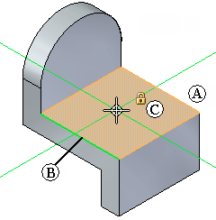
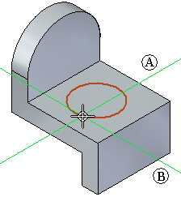
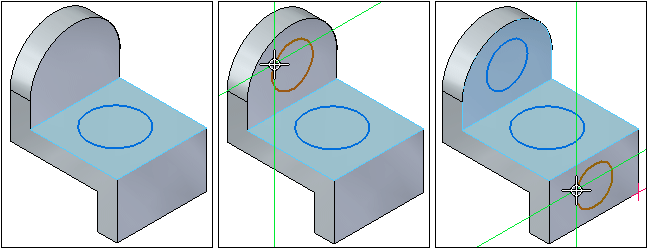
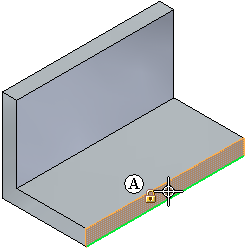
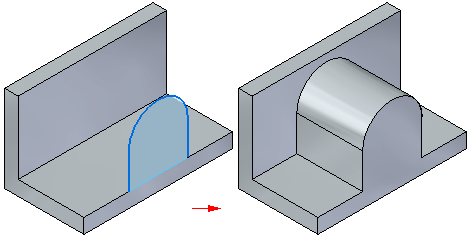
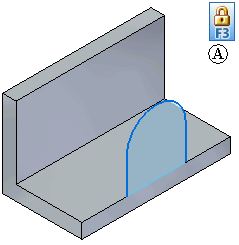
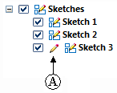

Sketch plane locking
There are two methods for locking input to the sketch plane:
-
Automatic locking, where the active command locks the sketch plane for you, and unlocks the sketch plane when you restart the command, or you start another command.
-
Manual locking, where you lock the sketch plane, and unlock it later yourself.
Sketch plane locking makes it easy to draw on several reference planes or planar faces quickly.
Automatic sketch plane locking
When you start a command that uses a sketch plane, and then position the cursor over a reference plane or planar face, the plane or face highlights (A), and an edge on the plane (B) is highlighted to indicate x-axis of the current sketch plane. The alignment lines, which extend outward from the cursor, also align themselves to the plane under the cursor. A lock symbol (C) is also displayed if you want to manually lock the sketch plane, which is discussed later.

When you click to position the starting point for the sketch element, the sketch plane is automatically locked to the highlighted plane or face. The alignment lines (A) (B) remain displayed as you draw to indicate the current sketch plane's X and Y axes.

The sketch plane remains locked until you right-click to restart the current command, or start another command. This ensures all sketch input lies on the current sketch plane.
Sketch plane locking makes it easy to draw on several faces of the model quickly. For example, after drawing the first circle, you can right-click to restart the command, then draw a circle on a second face, right click again, and draw a circle on a third face.

Manual sketch plane locking
You can also manually lock the sketch plane. This is useful when the sketch geometry is complex or will extend beyond the outer edges of the planar face or reference plane on which you want to draw.
When you are in a command that supports manual sketch plane locking, a lock symbol is displayed near the cursor (A) when you are over a planar face or reference plane. You can click this symbol to manually lock the plane.

You can also lock and unlock the sketch plane by pressing the F3 key when you are in any command that supports sketch plane locking.
The sketch plane remains locked regardless of the cursor position until you manually unlock the plane. This makes it easy to draw beyond the outer edges of the planar face.

When the sketch plane has been locked manually, a locked plane indicator symbol (A) is displayed in the top-right corner of the graphics window.

When you want to unlock the sketch plane, you can click the locked plane indicator symbol in the graphics window to unlock the plane, or you can press the F3 key.
Plane locking and PathFinder
Whether you lock the sketch plane automatically or manually, a locked plane indicator (A) appears in PathFinder adjacent to the sketch which is locked.

If there are existing sketches in the model, you can lock and unlock the sketch plane using the Lock Sketch Plane command on the PathFinder shortcut menu when your cursor is over a sketch entry.